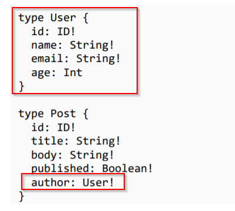

Here we try to create a relationship between different types. In order todo so, in the typeDefs se a property equals to the other type which is related to the current type of data.

Example here Post is related to User so in post we make a new property callede author and set it's type as User.
Now inorder to work with these relationships we need to make a custom resolver object

Here we create a resolver method for Post and access the data of post via parent .

This is how we query such a relatioship

Relationship Array
Relationship b/w array is nothing but set the return type of the schema to an[ type ]